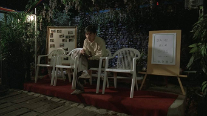
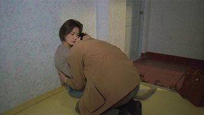
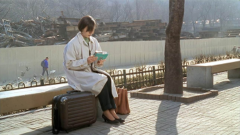
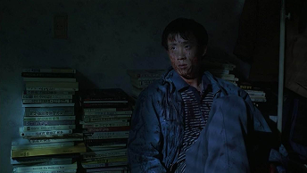
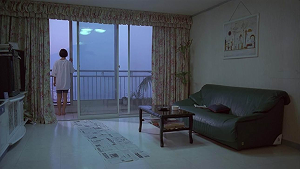

소설가 효섭(김의성)은 변변한 작품 하나 출간하지 못한 처지다. 후배의 출판사에서 자기 원고가 방치된 채 먼지만 쌓이고 있다는 것을 확인한 효섭은 저녁 술자리에서 평론가와 한바탕 싸움을 벌이고 철창신세를 진다. 그는 삼류 소설가로 취급받는 것에 열등감과 피해의식에 시달리면서 유부녀인 보경(이응경)과 열정적인 사랑에 빠져든다. 결벽증이 심한 보경의 남편 동우(박진성)는 업무 차 전주로 출장을 가지만 보경이 영 미덥지 못하다. 한편 효섭을 사랑하는 극장 매표원 민재(조은숙)는 효섭의 원고 교정을 봐주며 행복을 느끼지만, 효섭은 보경과의 불륜에만 탐닉한다. 보경은 짐을 싸서 효섭과 도망가기로 약속하지만 효섭은 나타나지 않는다. 효섭의 옥탑방을 찾아가지만 문은 잠겨 있고 인기척도 들리지 않는다. 이때 민재에게 사랑을 구했으나 거부당한 민수(손민석)는 효섭과 민재를 살해하고 넋을 잃은 채 효섭의 방에 앉아 있다. 보경은 그 사실을 알지 못하고 집으로 돌아온다. 아침에 신문을 펼쳐든 보경은 아파트 베란다에 들어온 햇살을 따라 신문을 깔고 그 위를 걸어간다.